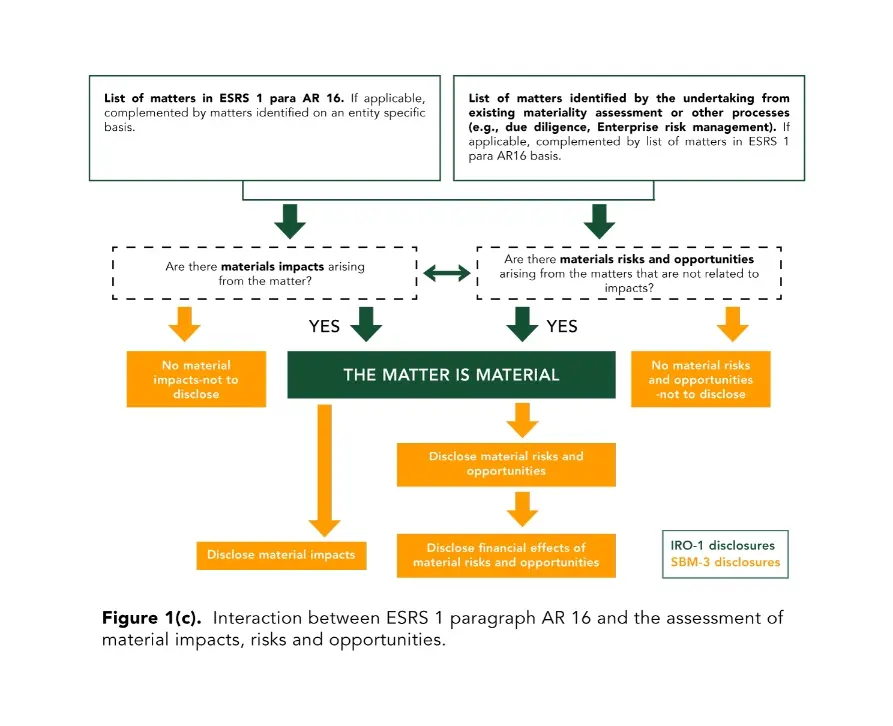
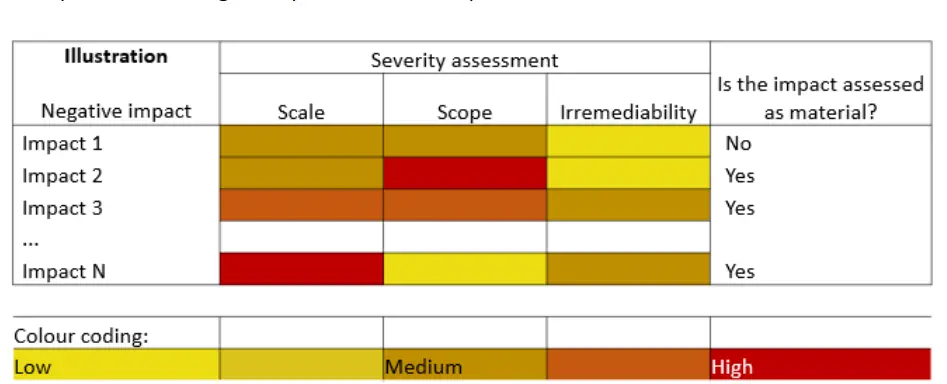

Conducting a double materiality assessment is a significant step for businesses to prepare for CSRD reporting. Preparing for CSRD Reporting involves conducting a comprehensive assessment of both impact and financial materiality to ensure accurate and transparent sustainability disclosures. This assessment serves as the cornerstone of the company's sustainability report, providing valuable insights into the risks and opportunities facing your business. A well-executed double materiality Assessment is crucial for companies aiming to align with the latest sustainability standards and regulations.
Concept of Double Materiality Assessment:
A double materiality assessment is a comprehensive approach used in sustainability reporting to evaluate the significance of sustainability issues from two interconnected perspectives: impact materiality and financial materiality.
Impact materiality considers the effects that a company's activities have on the environment, society, and the economy, focusing on how these activities influence external stakeholders and the broader ecosystem.
Assessing Impact Materiality allows businesses to understand the environmental, social, and economic effects of their operations on external stakeholders. Financial materiality, on the other hand, assesses how sustainability issues may affect the company's financial performance, position, and value creation, including risks and opportunities that could impact the company's cash flows, access to finance, or cost of capital. Incorporating Financial Materiality into your assessment ensures that the potential financial consequences of sustainability issues are accurately reported.
By integrating these two dimensions, double materiality ensures that companies account for both their external impacts and the financial implications of sustainability issues, providing a more holistic view of materiality in their sustainability disclosures. Integrating Materiality in Sustainability into your business strategy helps in identifying and managing significant sustainability issues effectively. Effective Sustainability Reporting requires companies to disclose material impacts and financial risks, offering stakeholders a clear view of the company's sustainability efforts.
Also Read: How CSRD impacts your Supply Chain: Ensuring Supplier Compliance
This approach requires companies to include in their sustainability statements all material information related to identified impacts, risks, and opportunities (IROs) that emerge from a materiality assessment (MA) process guided by the principles of double materiality. Companies must assess and disclose all material IROs across their value chains, considering both direct operations and external factors. Transparency in the materiality assessment process, including methodologies, assumptions, and criteria used, is required, and companies must ensure that the information provided is consistent with both internal and external reporting and relevant sustainability laws. The ESRS also allows for additional information from other sustainability standards if necessary to meet stakeholder needs. Following ESRS Guidelines is essential for companies to meet the reporting requirements under the European Sustainability Reporting Standards.
Implementing the Concept of Double Materiality:

Companies start by identifying relevant matters listed in ESRS 1 paragraph AR 16. These may be supplemented by entity-specific matters. Additionally, matters identified from the company's existing materiality assessment or other processes like due diligence and enterprise risk management are considered.
Assessment of Material Impacts:
The company must first determine if there are any material impacts arising from the matter. If material impacts are present, they must be disclosed in the sustainability report. If no material impacts are found, the company does not need to disclose anything related to that matter.
Assessment of Material Risks and Opportunities:
The company must evaluate if there are any material risks or opportunities related to the matter that are not directly tied to impacts. If such risks or opportunities exist, they must also be disclosed, along with any financial effects related to them. This could include potential changes in financial performance, dependencies on resources, or regulatory changes. For example, an oil and gas company may anticipate a significant adverse effect if it fails to consult with indigenous people about land use and community relocation. Although there are no expected protests at present, potential future protests could disrupt production and result in significant costs from lost production days or project abandonment. Such a scenario would be considered a material risk or opportunity that requires disclosure. However, if the company determines that there are no material risks or opportunities related to the matter, no disclosure is necessary.
Also Read: How CSRD impacts your Supply Chain: Ensuring Supplier Compliance
A matter is deemed material if it involves either significant material impacts or material risks and opportunities. The company must then provide comprehensive disclosure in its sustainability statement, covering both material impacts and the financial effects of any associated risks and opportunities. This approach ensures that companies provide a complete and accurate account of all significant sustainability issues, both in terms of their external impacts and their potential financial consequences.
Setting Thresholds of Impact Materiality:
ESRS 2 IRO-1 also requires the undertaking to explain how it determined the materiality of the impact, including the qualitative and quantitative thresholds used. Company shall apply the relevant criteria using appropriate quantitative and/or qualitative thresholds to assess the materiality of impacts connected to its activities as well as those directly linked to its operations, products and services, including through the upstream and downstream value chain.
The severity of an actual or potential negative impact is assessed from the perspective of the affected people or the environment, and it is determined by the following characteristics that inform the basis for determining the thresholds:

Figure 2: Graphical Representation of Impact Severity for Actual Impacts in Columnar Format (EFRAG-IG1 EFRAG IG 1: Materiality Assessment Implementation Guidance)
- Scale: The impact extent of infringement of access to basic life necessities or freedoms such as education, livelihood, etc.
- Scope: How widespread the impact is (i.e., the number of individuals affected or the extent of the environmental damage); and
- Irremediable character: The extent to which the impact can be remediated. The underlying question is whether there are any limits to the ability of restoring the environment or those affected to a situation at least the same as, or equivalent to, their situation, before the negative impact.
Reporting
Following the materiality assessment process, the undertaking shall report on the assessment process and its outcome based on:
- ESRS 2 IRO-1 Description of the processes to identify and assess material impacts, risks and opportunities.
- ESRS 2 SBM-3 Material impacts, risks and opportunities and their interaction with strategy and business model; and
- ESRS 2 IRO-2 Disclosure requirements in ESRS covered by the undertaking's sustainability statement. The undertaking shall also disclose how it has determined the material information to be disclosed, including thresholds and criteria used to assess such information (ESRS 2 paragraph 59).
- In addition, ESRS 2 GOV-2 Information provided to, and sustainability matters addressed by the undertaking's administrative, management and supervisory (AMB) bodies includes datapoints regarding how the AMB bodies are informed about the material impacts, risks and opportunities (ESRS 2 paragraph 26(a)) considers the IROs when overseeing the undertaking's strategy and risk management process and how these material IROs have been addressed during the period.
- Reporting company shall also report on material matters that are not covered in the topical ESRS in the form of entity-specific information as per ESRS 1 paragraph 11.
- For the topics that are deemed to be material, the company must disclose policies, targets, and actions mentioned under minimum disclosure requirements as per ESRS2.
Omission of Non-Material Topics
If a company decides to omit certain topics from AR 16, especially if the company concludes that there are no material Impact, Risk, or Opportunity (IRO) issues related to those topics, it must explain the reasoning behind these omissions. When the undertaking omits a datapoint listed in ESRS 2 Appendix B List of datapoints in cross-cutting and topical standards that derive from other EU legislation because it is not considered material, the undertaking must include an explicit statement saying that such a datapoint is ‘not material’. This ensures transparency and accountability in the reporting process, enabling stakeholders to understand the company's decisions regarding the inclusion or exclusion of certain sustainability topics.
Preliminary Observed ESRS Double Materiality Implementation Practices
EFRAG has published a study on Implementation of ESRS initial Observed Practices from Selected Companies the double materiality assessment process has shifted from a judgment-based approach to a more objective, evidence-based method. The EFRAG Implementation of double materiality practices reflects a shift towards more evidence-based assessments in sustainability reporting. This new approach, now adopted by about 70% of undertakings, relies heavily on internal and third-party data. When data gaps exist, qualitative insights from internal experts and stakeholders are used to supplement the analysis. This shift aims to provide a more thorough evaluation of ESG topics , improving decision-making.
Also Read: The EU Corporate Sustainability Due Diligence Directive: A New Era for Corporate Responsibility
Stakeholders and internal experts play a crucial role in the double materiality assessment process. Successful Stakeholder Engagement in Reporting enhances the credibility and thoroughness of the materiality assessment process, ensuring that all relevant perspectives are considered. They are involved at various stages, from topic selection to assessment review, ensuring a comprehensive understanding of material topics. More than 65% of undertakings use multiple channels to gather insights from stakeholders. An accurate ESG Topics Evaluation is critical for understanding the full scope of material impacts and risks associated with sustainability.
In terms of engagement methods, interviews are the most common, used by 70% of undertakings to gain in-depth views. Workshops are also increasingly favored, with 45% using them to review assessments. While surveys are still used by around 70% of undertakings, they are often combined with other methods due to concerns about their effectiveness, with only 5% relying on surveys alone.
Key Takeaways:
Implementing double materiality in CSRD reporting provides a comprehensive view of both the sustainability impacts a company has on its environment and society, and how these impacts affect its financial performance. By evaluating both impact materiality and financial materiality, companies ensure a thorough and transparent assessment of their sustainability issues. The shift towards evidence-based assessments and stakeholder engagement reflects a more accurate and effective approach to reporting. This not only aligns with regulatory requirements but also enhances decision-making and stakeholder trust. Embracing double materiality practices ultimately supports better sustainability performance and strategic alignment.
For tailored support in navigating your materiality assessment and ensuring comprehensive reporting, get in touch with us at ecoPRISM. Our expertise can help you effectively integrate double materiality into your sustainability practices and reporting.